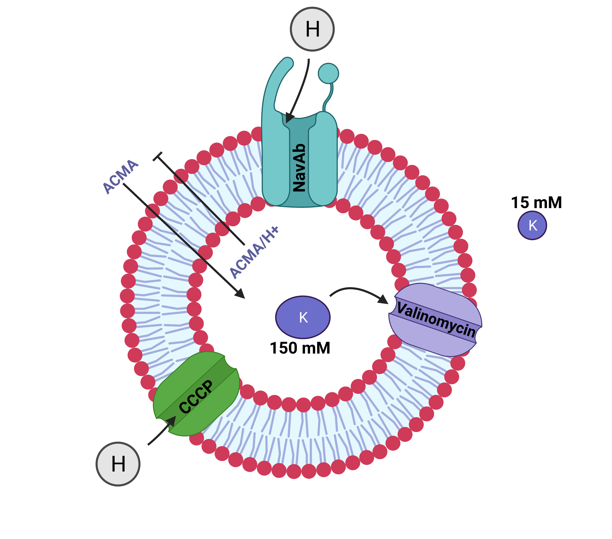

👨🏾💻 📦 What is normfluodbf 1.4.3.9000 ?
The {normfluodbf}
package is designed to clean and normalize DBF and DAT files obtained
from liposome flux assay (LFA) experiments performed with the FLUOstar
microplate reader. This package is designed to be multi-dimensional,
meaning the expectation is that file types from experiments other than
liposome flux assays should be compliant with this package if they meet
the same requirements as the original files for which this package was
designed.

File Types
💊 Package Context
What is the inspiration behind something like normfluodbf? First, the name of this package is misleading because it was initially designed to clean and normalize DBF files; however, the package is able to clean DAT files as well. The next sub-sections will shed more light on the context for the creation of this package. First, look at my abstract for the seminar I presented as a graduate student.
🧬 👨🔬 Abstract
Liposome flux assays (LFAs) provide a robust, affordable, and high throughput tool for the study of membrane channels. The project entailed adapting an LFA system from (Su et al., 2016) used in the study of Potassium (K) channels. The project conceptualized an LFA system centered around Voltage-gated sodium channels (NaVs), specifically the NavAb channel. NaVs are physiologically important in the generation of action potentials within systems that require excitability for function and are pathologically linked to conditions like epilepsy, migraines, etc. One reasoned that developing and testing an LFA system in the context of NavAb, if successful, will provide a good tool for screening molecules capable of NavAb interactions (in therapeutic or pathological scenarios). Interestingly, NavAb can conduct Na+ and H+ ions, amongst others, but the project one completed focused on the proton (H+) conductivity of the channel. One developed liposomes with NavAb insertions, and under specific conditions, I was able to detect proton (H+) conductivity through the channel driven by the K+ or Cs+ Nernst potentials. One utilized the fluorophore (ACMA) within the liposome as the proton flux signal indicator in all experimental conditions. It was confirmed that NavAb can conduct protons (H+), the NavAb LFA system worked, and it was found that increasing concentrations of ACMA (2-5 uM) within the acceptable range (0.2uM to 20uM) had no effect on proton quenching. An aberrant observation was that very high concentrations of ACMA (20uM) generated noise that was useful in determining noise-signal boundaries. One thought it was fascinating to find a system that could be understood or interpreted using noise as well as signal.
🧪 What are Liposome Flux Assays ?
- Assays that use channel-insert liposomes coupled with a fluorophore (ACMA is common) to understand the properties or behaviors of these channels in an out-of-cell context.
- The inserted channels are synthesized from biological procedures and used in understanding the electrophysiological properties of ion channels.
- This assay has applications in drug development. Potential drug targets can be screened by including those targets in these assays to decipher how they affect the ion channel being probed.
- A route I almost took was utilizing this assay to understand the behavior of chloride channels to find possible drug targets for a condition like Cystic Fibrosis. This idea was inspired by a peer of mine who had a sibling with cystic fibrosis.
- A lot can be said about this assay, but I will stick to the big picture and leave the rest to the imagination of the reader. This is a glimpse of what can be done with this assay.

⛳ Specific Concepts Solved by normfluodbf 1.4.3.9000 ?
- For higher-level problem-solving, it is not enough to have blurry pain points. It is important to have excellent articulation of the separate concepts surrounding the pain points.
- The pain point is data obtained from the FLUOstar instrument is not friendly for analysis, thus requiring some wrangling before the researcher can conduct data analysis and output some amazing visuals that can aid in extracting insights about the experiment or simply for presentations to project stakeholders.
- There is very little valuable insight derived from analyzing data on a sliding scale. After cleaning the data, normalization is needed.
- The DBF file obtained from the instrument is harder to find than the DAT file. The package gives the user an option to analyze the DAT file, which should allow for an overall better experience.
🏌️ Who Should Use normfluodbf 1.4.3.9000 ?
- Biologists (students or professors) who conduct research across the USA or globally can attest to the use of physics concepts, specifically fluorescence, in understanding the biophysical properties of biological components (cells, DNA, RNA, proteins, etc.).
- The package is designed for scientists (in academic or pharmaceutical settings) who need a tool to analyze data obtained from the FLUOstar Omega microplate reader. I am unsure of the far-reaching capabilities of the FLUOstar microplate reader since it is, after all, a physics concept, but there might be industries beyond the pharmaceutical industry that might find this package useful.
- As a graduate student, I wish such a package existed, so I hope this saves a lot of time for researchers.
🤖 💩 How did ChatGPT Help ?
- Upon completion of this package, I went to ChatGPT and created an assistant to help clean the DAT file. ChatGPT was unable to perform data wrangling using pandas.
- ChatGPT had no solution to this problem. I am still a big fan.
🔮 What the future holds ?
- This package has reached maturity. I will maintain the package to the best of my ability.
- There are minor tweaks I can think about, but just for my own learning, and these might or might NOT come later.
- I will be working on seeing how to integrate function calling in ChatGPT to use R in cleaning these DAT files. The functions from this package can hopefully be used in ChatGPT to clean and normalize DAT or DBF files from the FLUOstar instrument.
🍻 Cheers
I leave you with some fun. From my basement to YOU with MVP love, and I don’t know how long I will be there since that rent is looking massive.
Thanks to the users of 1.4.3 and hope I made your lives a tad bit easier with this update.
Raise issues or forward me emails as quickly as you notice any hiccups or R changes that need updates.
Your R DEV
 . There
you go my name is now a badge.
. There
you go my name is now a badge.